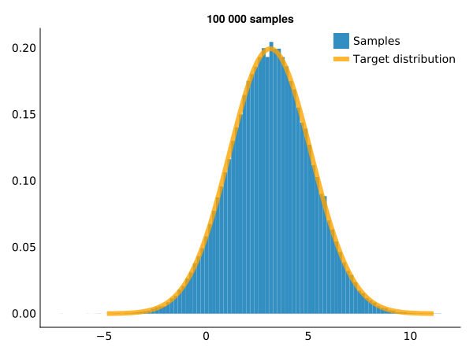

ARS
Documentation for ARS.
This package implements univariate adaptive rejection sampling as specified by Gilks & Wild [1].
Showcase
ARS allows you to sample from unnormalized logarithmically concave distributions. In the following example we will sample from an unnormalized normal distribution.
using ARS, CairoMakie, Distributions, Random
set_theme!(theme_minimal())
update_theme!(linewidth = 6)
update_theme!(fonts = (; regular = "DejaVu Sans"))
Random.seed!(1)Lets use a normal distribution centered on $\pi$ with standard deviation 2.
const mu::Float64 = π
const sigma::Float64 = 2.0
# Define a normal distribution without the normalizing terms.
f(x) = exp(-((x - mu)^2) / (2 * sigma^2))
# Use the normal distribution from Distributions.jl for verification.
normal(x) = pdf(Normal(mu, sigma), x)
l, u = mu - sigma * 4, mu + sigma * 4
fig, ax, p = lines(l..u, f, label = "Unnormalized density")
lines!(ax, l..u, normal, label = "Actual normal distribution")
axislegend(ax)Let's imagine we did not know the actual normalizing constant for the normal distribution above. In order to sample from it using ARS, we first define an objective function using ARS.Objective. By default, automatic differentiation through Mooncake.jl is used to calculate the derivative of the function to be sampled from.
First, we need to supply the function in its log form. For illustration purposes, we simply do log(f(x)).
f_log(x) = log(f(x))
obj = ARS.Objective(f_log)ARS.Objective{typeof(Main.f_log), ARS.var"#1#2"{typeof(Main.f_log), DifferentiationInterfaceMooncakeExt.MooncakeGradientPrep{Tuple{typeof(Main.f_log), ADTypes.AutoMooncake{Nothing}, Float64, Tuple{}}, Mooncake.Cache{Mooncake.DerivedRule{Tuple{typeof(Main.f_log), Float64}, Tuple{Mooncake.CoDual{typeof(Main.f_log), Mooncake.NoFData}, Mooncake.CoDual{Float64, Mooncake.NoFData}}, Mooncake.CoDual{Float64, Mooncake.NoFData}, Tuple{Float64}, Tuple{Mooncake.NoRData, Float64}, false, Val{2}}, Nothing, Tuple{Mooncake.NoTangent, Float64}}}, ADTypes.AutoMooncake{Nothing}}}(Main.f_log, ARS.var"#1#2"{typeof(Main.f_log), DifferentiationInterfaceMooncakeExt.MooncakeGradientPrep{Tuple{typeof(Main.f_log), ADTypes.AutoMooncake{Nothing}, Float64, Tuple{}}, Mooncake.Cache{Mooncake.DerivedRule{Tuple{typeof(Main.f_log), Float64}, Tuple{Mooncake.CoDual{typeof(Main.f_log), Mooncake.NoFData}, Mooncake.CoDual{Float64, Mooncake.NoFData}}, Mooncake.CoDual{Float64, Mooncake.NoFData}, Tuple{Float64}, Tuple{Mooncake.NoRData, Float64}, false, Val{2}}, Nothing, Tuple{Mooncake.NoTangent, Float64}}}, ADTypes.AutoMooncake{Nothing}}(Main.f_log, DifferentiationInterfaceMooncakeExt.MooncakeGradientPrep{Tuple{typeof(Main.f_log), ADTypes.AutoMooncake{Nothing}, Float64, Tuple{}}, Mooncake.Cache{Mooncake.DerivedRule{Tuple{typeof(Main.f_log), Float64}, Tuple{Mooncake.CoDual{typeof(Main.f_log), Mooncake.NoFData}, Mooncake.CoDual{Float64, Mooncake.NoFData}}, Mooncake.CoDual{Float64, Mooncake.NoFData}, Tuple{Float64}, Tuple{Mooncake.NoRData, Float64}, false, Val{2}}, Nothing, Tuple{Mooncake.NoTangent, Float64}}}(Val{Tuple{typeof(Main.f_log), ADTypes.AutoMooncake{Nothing}, Float64, Tuple{}}}(), Mooncake.Cache{Mooncake.DerivedRule{Tuple{typeof(Main.f_log), Float64}, Tuple{Mooncake.CoDual{typeof(Main.f_log), Mooncake.NoFData}, Mooncake.CoDual{Float64, Mooncake.NoFData}}, Mooncake.CoDual{Float64, Mooncake.NoFData}, Tuple{Float64}, Tuple{Mooncake.NoRData, Float64}, false, Val{2}}, Nothing, Tuple{Mooncake.NoTangent, Float64}}(Mooncake.DerivedRule{Tuple{typeof(Main.f_log), Float64}, Tuple{Mooncake.CoDual{typeof(Main.f_log), Mooncake.NoFData}, Mooncake.CoDual{Float64, Mooncake.NoFData}}, Mooncake.CoDual{Float64, Mooncake.NoFData}, Tuple{Float64}, Tuple{Mooncake.NoRData, Float64}, false, Val{2}}(MistyClosure (::Mooncake.CoDual{typeof(Main.f_log), Mooncake.NoFData}, ::Mooncake.CoDual{Float64, Mooncake.NoFData})::Mooncake.CoDual{Float64, Mooncake.NoFData}->◌, Base.RefValue{MistyClosures.MistyClosure{Core.OpaqueClosure{Tuple{Float64}, Tuple{Mooncake.NoRData, Float64}}}}(MistyClosure (::Float64)::Tuple{Mooncake.NoRData, Float64}->◌), Val{2}()), nothing, (Mooncake.NoTangent(), 0.0))), ADTypes.AutoMooncake{Nothing}(nothing)))We then define the sampler itself providing the initial points for the hull as well as the desired domain. Initial points needs to be at opposing sides of the function maximum.
sam = ARS.ARSampler(obj, [-2., 4.], (-Inf, Inf))ARS.ARSampler{Float64, typeof(Main.f_log), ARS.var"#1#2"{typeof(Main.f_log), DifferentiationInterfaceMooncakeExt.MooncakeGradientPrep{Tuple{typeof(Main.f_log), ADTypes.AutoMooncake{Nothing}, Float64, Tuple{}}, Mooncake.Cache{Mooncake.DerivedRule{Tuple{typeof(Main.f_log), Float64}, Tuple{Mooncake.CoDual{typeof(Main.f_log), Mooncake.NoFData}, Mooncake.CoDual{Float64, Mooncake.NoFData}}, Mooncake.CoDual{Float64, Mooncake.NoFData}, Tuple{Float64}, Tuple{Mooncake.NoRData, Float64}, false, Val{2}}, Nothing, Tuple{Mooncake.NoTangent, Float64}}}, ADTypes.AutoMooncake{Nothing}}}(ARS.Objective{typeof(Main.f_log), ARS.var"#1#2"{typeof(Main.f_log), DifferentiationInterfaceMooncakeExt.MooncakeGradientPrep{Tuple{typeof(Main.f_log), ADTypes.AutoMooncake{Nothing}, Float64, Tuple{}}, Mooncake.Cache{Mooncake.DerivedRule{Tuple{typeof(Main.f_log), Float64}, Tuple{Mooncake.CoDual{typeof(Main.f_log), Mooncake.NoFData}, Mooncake.CoDual{Float64, Mooncake.NoFData}}, Mooncake.CoDual{Float64, Mooncake.NoFData}, Tuple{Float64}, Tuple{Mooncake.NoRData, Float64}, false, Val{2}}, Nothing, Tuple{Mooncake.NoTangent, Float64}}}, ADTypes.AutoMooncake{Nothing}}}(Main.f_log, ARS.var"#1#2"{typeof(Main.f_log), DifferentiationInterfaceMooncakeExt.MooncakeGradientPrep{Tuple{typeof(Main.f_log), ADTypes.AutoMooncake{Nothing}, Float64, Tuple{}}, Mooncake.Cache{Mooncake.DerivedRule{Tuple{typeof(Main.f_log), Float64}, Tuple{Mooncake.CoDual{typeof(Main.f_log), Mooncake.NoFData}, Mooncake.CoDual{Float64, Mooncake.NoFData}}, Mooncake.CoDual{Float64, Mooncake.NoFData}, Tuple{Float64}, Tuple{Mooncake.NoRData, Float64}, false, Val{2}}, Nothing, Tuple{Mooncake.NoTangent, Float64}}}, ADTypes.AutoMooncake{Nothing}}(Main.f_log, DifferentiationInterfaceMooncakeExt.MooncakeGradientPrep{Tuple{typeof(Main.f_log), ADTypes.AutoMooncake{Nothing}, Float64, Tuple{}}, Mooncake.Cache{Mooncake.DerivedRule{Tuple{typeof(Main.f_log), Float64}, Tuple{Mooncake.CoDual{typeof(Main.f_log), Mooncake.NoFData}, Mooncake.CoDual{Float64, Mooncake.NoFData}}, Mooncake.CoDual{Float64, Mooncake.NoFData}, Tuple{Float64}, Tuple{Mooncake.NoRData, Float64}, false, Val{2}}, Nothing, Tuple{Mooncake.NoTangent, Float64}}}(Val{Tuple{typeof(Main.f_log), ADTypes.AutoMooncake{Nothing}, Float64, Tuple{}}}(), Mooncake.Cache{Mooncake.DerivedRule{Tuple{typeof(Main.f_log), Float64}, Tuple{Mooncake.CoDual{typeof(Main.f_log), Mooncake.NoFData}, Mooncake.CoDual{Float64, Mooncake.NoFData}}, Mooncake.CoDual{Float64, Mooncake.NoFData}, Tuple{Float64}, Tuple{Mooncake.NoRData, Float64}, false, Val{2}}, Nothing, Tuple{Mooncake.NoTangent, Float64}}(Mooncake.DerivedRule{Tuple{typeof(Main.f_log), Float64}, Tuple{Mooncake.CoDual{typeof(Main.f_log), Mooncake.NoFData}, Mooncake.CoDual{Float64, Mooncake.NoFData}}, Mooncake.CoDual{Float64, Mooncake.NoFData}, Tuple{Float64}, Tuple{Mooncake.NoRData, Float64}, false, Val{2}}(MistyClosure (::Mooncake.CoDual{typeof(Main.f_log), Mooncake.NoFData}, ::Mooncake.CoDual{Float64, Mooncake.NoFData})::Mooncake.CoDual{Float64, Mooncake.NoFData}->◌, Base.RefValue{MistyClosures.MistyClosure{Core.OpaqueClosure{Tuple{Float64}, Tuple{Mooncake.NoRData, Float64}}}}(MistyClosure (::Float64)::Tuple{Mooncake.NoRData, Float64}->◌), Val{2}()), nothing, (Mooncake.NoTangent(), 0.0))), ADTypes.AutoMooncake{Nothing}(nothing))), ARS.UpperHull{Float64}([-0.7337005501361697, 0.7662994498638303], [1.2853981633974483, -0.21460183660255172], [-Inf, 1.0, Inf], [-2.0, 4.0], [1.350708254883096, 8.09032176797251], (-Inf, Inf)), ARS.LowerHull{Float64}([-2.2337005501361697], [0.5353981633974483], [-2.0, 4.0]))In order to retrieve samples, we use the ARS.sample! function. As is indicated by the !, this function modifies the sampler itself in order to improve future sampling whenever a sample is rejected.
samples = ARS.sample!(sam, 1000);1000-element Vector{Float64}:
1.439713299314249
-0.8943148644045692
2.5520758369708525
2.3557645435940757
3.635438914948397
3.0166969586443377
7.5272435031658045
2.1511992854849615
3.7735020238687658
2.1940148057903173
⋮
5.222436492142635
1.7849065876608348
2.06210693498759
2.0475243471820437
1.7465925445151798
3.768018078244205
7.9743718344902925
2.5593187163703095
0.5746858116786882Lets compare the samples drawn from the sampler to the actual target distribution.
fig, ax, p = hist(samples, bins=100, normalization = :pdf, label = "Samples", axis = (; title="1000 samples"))
lines!(l..u, normal, label = "Target distribution", color = :orange, linewidth = 3, alpha = 0.8)
axislegend(ax)Lets do one with more samples in order to verify that it actually approaches the target.
Truncated density
Lets try a truncated density such as the beta distribution.
As before, we define the distribution without its normalizing terms as well as a function from Distributions.jl to compare with.
const alpha::Float64 = 2.5
const beta::Float64 = 5.0
f(x) = x^(alpha - 1) * (1 - x)^(beta - 1)
beta_proper(x) = pdf(Beta(alpha, beta), x)
l, u = 0, 1
fig, ax, p = lines(l..u, f, label="Unnormalized density")
lines!(ax, l..u, beta_proper, label = "Actual beta distribution")
axislegend(ax)Lets define the objective and sampler. As the beta distribution is bounded on $x \in [0, 1]$ we specify this in the domain argument when creating the sampler.
f_log(x) = log(f(x))
obj = ARS.Objective(f_log)
sam = ARS.ARSampler(obj, [0.2, 0.8], (0.0, 1.0))Lets visualize the samples as before.
samples = ARS.sample!(sam, 100000)
fig, ax, p = hist(samples, bins=100, label = "Samples", normalization = :pdf)
lines!(ax, 0..1, beta_proper, label = "Target", color = Cycled(2))
axislegend(ax)Of course, we can specify arbitrary bounds. Let's define the same beta distribution as above but truncated at $[0.5, 1.0]$ and compare them with sampling from a truncated Distributions.jl distribution (with plotting code hidden for brevity).
sam_bounded = ARS.ARSampler(obj, [0.8], (0.5, 1.0))
samples_bounded = ARS.sample!(sam_bounded, 100000)
dist_bounded = truncated(Beta(alpha, beta), lower=0.5)
samples_true = rand(dist_bounded, 100000)